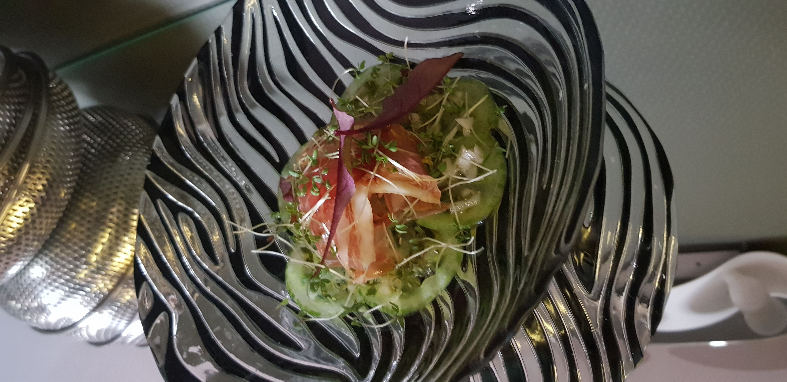

Twee Werelden, Eén Adres
Twee Concepten

Restaurant Amu
Een gastronomische ervaring waar Chef Marjanne je verrast met seizoensgebonden verrassingsmenu's. Elk gerecht is een ode aan verse, lokale ingrediënten — verfijnd, creatief en met passie bereid. Reserveren is aanbevolen.
Ontdek meer
Bar Amu
Een gezellige wijnbar waar je zonder reservatie kan binnenwandelen. Geniet van een uitgelezen selectie wijnen, een aperitief of een lekkere plank. De perfecte plek om de avond te beginnen of af te sluiten.
Ontdek meer